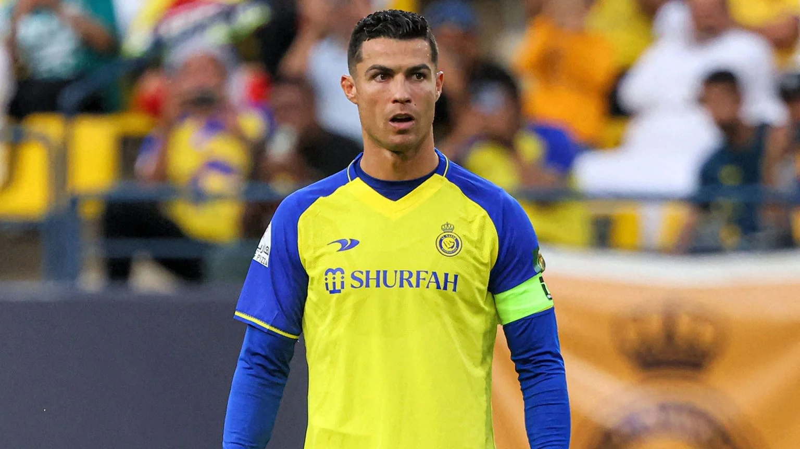
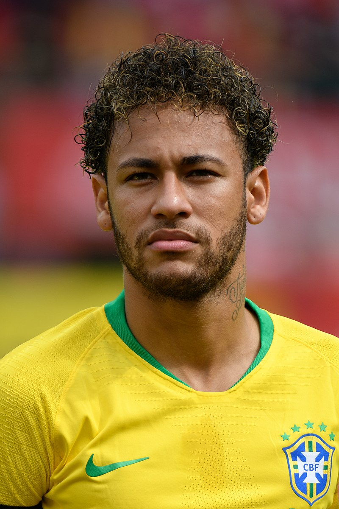

Players Life

Ronaldo
Cristiano Ronaldo dos Santos Aveiro GOIH ComM (Portuguese pronunciation: [kɾiʃˈtjɐnu ʁɔˈnaldu]; born 5 February 1985) is a Portuguese professional footballer who plays as a forward for and captains both Saudi Professional League club Al Nassr and the Portugal national team. Widely regarded as one of the greatest players of all time, Ronaldo has won five Ballon d'Or awards[note 3] and four European Golden Shoes, the most by a European player. He has won 32 trophies in his career, including seven ..
.jpg)
Messi
Lionel Andrés Messi[note 1] (Spanish pronunciation: [ljonel andɾes mesi] (listen); born 24 June 1987), also known as Leo Messi, is an Argentine professional footballer who plays as a forward for and captains the Argentina national team. Widely regarded as one of the greatest players of all time, Messi has won a record seven Ballon d'Or awards[note 2] and a record six European Golden Shoes, and in 2020 he was named to the Ballon d'Or Dream Team. Until leaving the club in 2021, he had spent his entire professional career with Barcelona, where he won a club-record 34 trophies, including ten La Liga titles, seven Copa del Rey titles and the UEFA Champions League four times.[note 3] With his country, he won the 2021 Copa América and the 2022 FIFA World Cup. A prolific goalscorer and creative playmaker, Messi holds the records for most goals in La Liga (474), most hat-tricks in La Liga (36) and th

Neymar
Neymar da Silva Santos Júnior (born 5 February 1992), known as Neymar Júnior or mononymously as Neymar, is a Brazilian professional footballer who plays as a forward for Ligue 1 club Paris Saint-Germain and the Brazil national team. A prolific goalscorer and renowned playmaker, he is widely regarded as one of the best players in the world as well as one of the greatest Brazilian men's footballers of all time.[3][4][5] Neymar has scored at least 100 goals for three different clubs, making him one of four players to achieve this feat.[6] Neymar came into prominence at Santos, where he made his professional debut aged 17. He helped the club win two successive Campeonato Paulista championships, a Copa do Brasil, and the 2011 Copa Libertadores; the latter being Santos' first since 1963. Neymar was twice named the South American Footballer of the Year, in 2011 and 2012, and soon relocated to Europe to join Barcelona. As part of Barcelona's attacking trio with Lionel Messi